Datenbankimport durch LabTalk-Substitution aktualisieren
Zusammenfassung
 |
Die in diesem Tutorial verwendete Datenbank wurde auf Microsoft Azure eingerichtet.
|
Dieses Tutorial zeigt, wie Sie mit einer definierten LabTalk-Variable in SQL Daten aus einer Datenbank in ein Origin-Arbeitsblatt importieren und ein Säulendiagramm aus den importierten Daten zeichnen. Ändern Sie dann die LabTalk-Variable und importieren Sie die Datenbank erneut.
Das Vorgehen basiert auf Origin 2023b.
Was Sie lernen werden
Dieses Tutorial zeigt Ihnen, wie Sie:
- Daten mit dem SQL-Editor importieren,
- die LabTalk-Substitution in SQL-Aussagen verwenden,
- ein Säulendiagramm erstellen,
- Datenbankimport durch LabTalk-Substitution aktualisieren.
Schritte
Daten aus einer Datenbank importieren
- Öffnen Sie ein neues Projekt. Wählen Sie im Menü Daten: Mit Datenbank verbinden: Neu... oder klicken Sie auf die Schaltfläche SQL-Editor öffnen auf der Symbolleiste Datenbankzugriff.

- Wählen Sie die Option Verbindungszeichenkette aus und klicken Sie auf OK. Fügen Sie die Verbindungszeichenkette unten ein.
Driver={SQL Server}; Server=olab.DATABASE.windows.net; Port=1433; DATABASE=sample1; Uid=Olabts; Pwd=Origin@2024;
Wenn Sie ODBC Drive 18 for SQL Server benutzen, verwenden Sie
Driver={ODBC Driver 18 FOR SQL Server}; Server=olab.DATABASE.windows.net; Port=1433; DATABASE=sample1; Uid=Olabts; Pwd=Origin@2024;
- Klicken Sie auf die Schaltfläche OK, um die Verbindung zur Datenbank herzustellen.
- Kopieren und fügen Sie die folgende Abfrage in das Textfeld des SQL-Editors ein. Die Abfrage zeigt die Gesamtverkäufe jedes Produkts nach jeweiligem Unternehmensnamen.
SELECT SalesLT.ProductCategory.Name AS ProductName, SUM(SalesLT.SalesOrderDetail.LineTotal) AS '%(company$)' FROM SalesLT.SalesOrderDetail INNER JOIN SalesLT.Product ON SalesLT.Product.ProductID=SalesLT.SalesOrderDetail.ProductID INNER JOIN SalesLT.SalesOrderHeader ON SalesLT.SalesOrderHeader.SalesOrderID =SalesLT.SalesOrderDetail.SalesOrderID INNER JOIN SalesLT.ProductCategory ON SalesLT.Product.ProductCategoryID = SalesLT.ProductCategory.ProductCategoryID INNER JOIN SalesLT.Customer ON SalesLT.Customer.CustomerID = SalesLT.SalesOrderHeader.CustomerID WHERE SalesLT.Customer.CompanyName LIKE '%(company$)' GROUP BY SalesLT.ProductCategory.Name
- Um eine LabTalk-Zeichenkettenvariable für das Unternehmen hinzuzufügen, wählen Sie Anfrage: LabTalk.... Der Dialog Einstellungen der Unterstützung von LabTalk wird geöffnet.

- Aktivieren Sie das Kontrollkästchen Substitution durch LabTalk (%,$) aktivieren.
- Geben Sie das Skript unten:
string company$ = "Professional Sales and Service";
in dem Feld Skript vor Anfrage ein, um eine LabTalk-Zeichenkettenvariable company zu definieren. Klicken Sie auf OK.
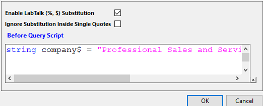
- Klicken Sie auf die Schaltfläche , um eine Vorschau der SQL-Abfragezeichenkette mit substituierter LabTalk-Variable im Feld des SQL-Editors anzuzeigen.
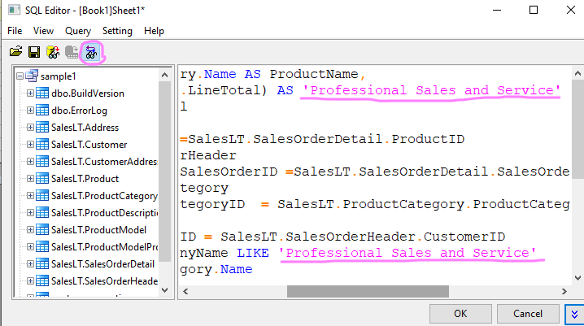
- Klicken Sie auf die Schaltfläche OK, um die Daten in die Arbeitsmappe zu importieren. Per Standard wird die SQL zusammen mit dem Arbeitsblatt gespeichert.
- Das Symbol oben links in der Arbeitsmappe weist darauf hin, dass das Blatt eine SQL-Abfrage enthält.
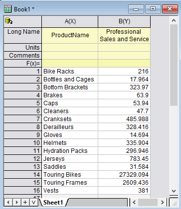
Ein Säulendiagramm zeichnen
- Markieren Sie Spalte B und zeichnen Sie ein Säulendiagramm.
- Blenden Sie Rahmen und Gitternetz ein. Blenden Sie die Hilfsstriche aus und entfernen Sie die Achsentitel. Drehen Sie die Hilfsstrichbeschriftungen.
- Klicken Sie in den weißen Bereich innerhalb des Layerrahmens, um den Layer auszuwählen, und klicken Sie auf die Minisymbolleistenschaltfläche Automatisch neu skalieren, so dass die Achse bei neuen Daten automatisch neu skaliert wird.
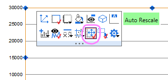
- Klicken Sie auf die obere Kante der weißen Fläche im Diagramm und wählen Sie die Minisymbolleistenschaltfläche Seitentitel hinzufügen.
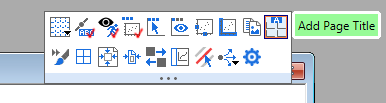
- Geben Sie %(1,@LA) ein. Dies ist die Substitution, um den Spaltenlangnamen der ersten Zeichnung zu zeigen.
- Klicken Sie auf %(1, @LA) und auf die Minisymbolleistenschaltfläche Verknüpfung zur Substitution, um sie zu aktivieren.
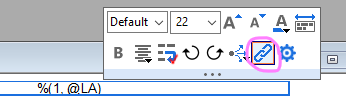
- Der Langname von Spalte B wird als Seitentitel verwendet. Das endgültige Diagramm sieht folgendermaßen aus.
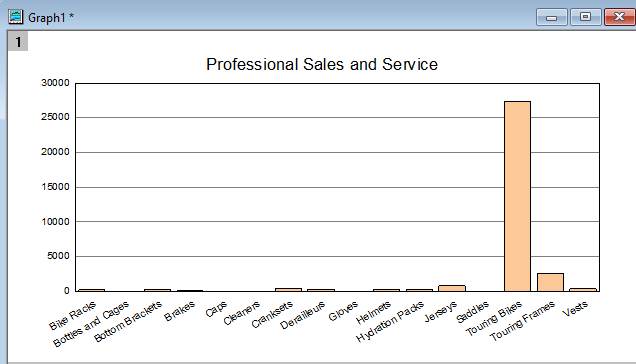
Datenbankimport durch LabTalk-Substitution aktualisieren
Es gibt mehrere Stellen in SQL mit den Unternehmensinfos. Der Vorteil beim Verwenden der LabTalk-Variable ist, dass Anwender nur die Variable im Dialog Einstellungen der Unterstützung von LabTalk ändern müssen. Alle Stellen mit dieser Variable werden bei Ausführung ersetzt.
- Aktivieren Sie das Arbeitsblatt mit Daten aus der obigen Datenbank. Klicken Sie auf die Schaltfläche SQL-Editor . Der SQL-Editor wird wieder geöffnet, dieses Mal mit den gespeicherten Einstellungen.
- Wählen Sie im Menü Anfrage: LabTalk... im SQL-Editor, um den Dialog Einstellungen der Unterstützung von LabTalk zu öffnen. Wechseln Sie jetzt zu
string company$ = "Riding Cycles";
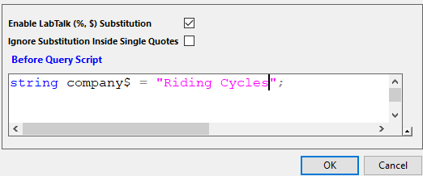
- Klicken Sie auf OK, um zum SQL-Editor zurückzukehren. Klicken Sie auf OK, um die Arbeitsmappe zu importieren. Die Grafik wird automatisch aktualisiert.
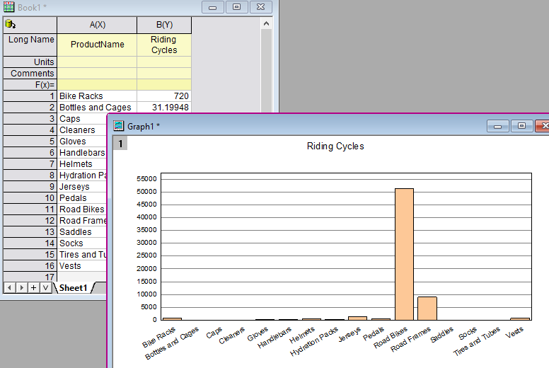
Dazu müssen Sie aber den Dialog des SGL-Editors jedes Mal öffnen, um die Variablenwerte, die sich nicht eignen, zu ändern. Eine bequemere Methode zum Modifizieren der Einstellungen der LabTalk-Unterstützung ist die Verwendung von globalen Variablen. Sie können dann die globalen Variablen außerhalb des SQL-Editors modifizieren und neu importieren.
- Aktivieren Sie erneut das Arbeitsblatt und klicken Sie auf , um den SQL-Editor zu öffnen.
- Wählen Sie im Menü Anfrage: LabTalk... und ändern Sie die Einstellungen der LabTalk-Unterstützung folgendermaßen.
string company$ = ""; // For the first company substitution if(exist(thecompany$, 18) == 18) // if thecompany$ exists { company$ = thecompany$; // if yes, assign to company$ } else { company$ = "Professional Sales and Service"; // if no, use "Professional Sales and Service" as company$ }
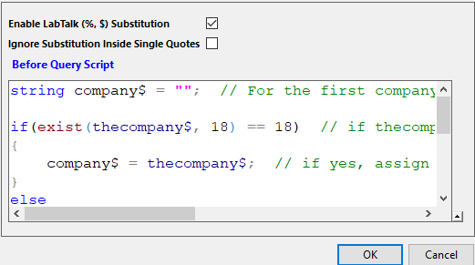
- Klicken Sie auf OK, um den Dialog SQL-Editor zu schließen.
- Stellen Sie sicher, dass das Arbeitsblatt mit der Datenbank das aktive Fenster ist.
- Wählen Sie im Menü Fenster: Skriptfenster, um das Skriptfenster zu öffnen.
- Fügen Sie folgendes Skript in das Skriptfenster ein. Markieren Sie alles und drücken Sie ENTER, um die Befehle auszuführen.
string thecompany$="Action Bicycle Specialists"; //define global string variable thecompany$ dbimport; //import data from database
- Die Daten im Arbeitsblatt und Diagramm werden aktualisiert.
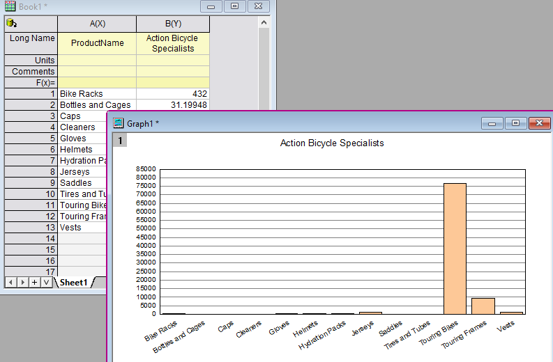
Hinweis:
- "Global" bedeutet, dass die LabTalk-Variablen vom SQL-Editor "gesehen" und für Substitutionen verwendet werden können. Variablen, die ohne Deklaration erstellt wurden (nur zugelassen für die Typen Double, Zeichenkette und Datensatz), z. B. name$="Smith", werden Projektvariablen und mit der Origin-Projektdatei gepeichert.
- Der letzte LabTalk-Befehl dbimport ist der gleiche, der auch beim Klicken auf die Schaltfläche Daten importieren
 auf der Symbolleiste Datenbankzugriff ausgeführt wird.
auf der Symbolleiste Datenbankzugriff ausgeführt wird.
- Verwenden Sie string company$ = "%%Supplies";, um Unternehmen zu finden, die mit Supplies enden. Nach der Substitution sieht die SQL folgendermaßen aus: WHERE SalesLT.Customer.CompanyName LIKE '%Supplies'.